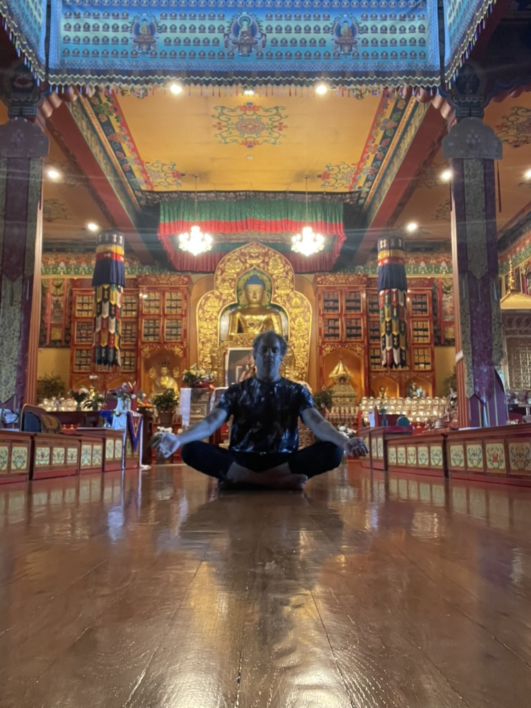
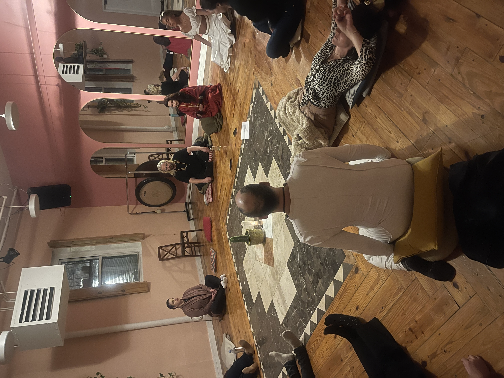

Offerings
Three paths. One destination.
Retreats, ceremony, and The Space Between. Three ways to slow down, reconnect, and return to yourself, each suited to a different season of life.
Offerings
Retreats, ceremony, and The Space Between. Three ways to slow down, reconnect, and return to yourself, each suited to a different season of life.

A live meditation course
Five live small-group sessions and one private follow-up. Learn to calm the nervous system, work with the many voices within, and build a practice that lasts.
Learn more →
A return to ancestral tradition
Rooted in indigenous tradition — gathering in community to recalibrate, reboot, and renew together, witnessed rather than alone.
Learn more →
Immersive multi-day retreat
The Heart Map™, silent nature hikes, and closing ceremony — our full Method™, in Puerto Rico, Yosemite, Montana, or India.
View Retreats →Across cultures and centuries, communities have gathered in ceremony — to pray, to witness one another, to call in what they needed to move forward. Some traditions used plant medicines. Others used tobacco, chanting, prayer, or silence. What they shared was community: recalibrating, rebooting, and renewing together, rather than alone.
Modern life has stripped much of that away. Ceremony is an invitation back into it.
Held in community at one of our retreat locations, Ceremony is a single, powerful experience of collective presence — set within meditation, nature, and intentional space (set and setting), allowing recalibration to happen not in isolation, but witnessed.
Indigenous cultures around the world have long understood something modern life has forgotten: that resetting — recalibrating direction, rebooting energy, renewing purpose — often happens best in the presence of others who are walking the same road. Ceremony is a return to that — a space to be seen, to reset, and to move forward together. This isn't only about healing what's wounded. It's about recalibrating what's misaligned, and renewing what's gone quiet.
Some things can only be healed in the presence of others. This is a return to that.
A live online course, taught in a small group.
Most people who want to meditate never really learn how. The Space Between is a real practice, taught live over five sessions, for anyone who wants to calm an overactive nervous system, work with the part of the mind that won't stop talking, and build something steady enough to carry into a full life.
Fifteen seats. Five sessions. One practice you'll actually keep.
Explore The Space Between